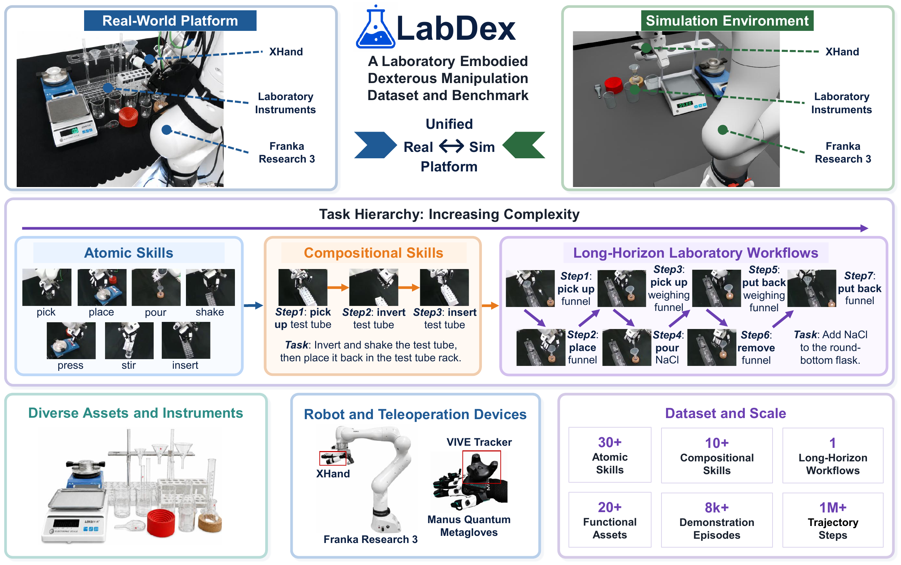
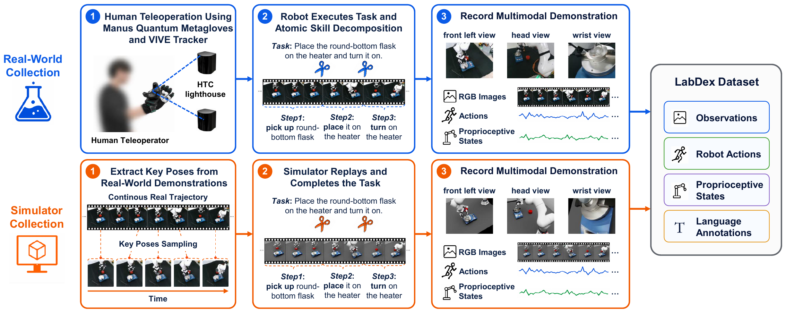

Atomic Skills
Reusable, fine-grained primitives that capture fundamental dexterous manipulation capabilities, including precise grasping, insertion, and liquid dispensing.
Autonomous laboratories require robots to dexterously manipulate diverse labware and execute complex, multi-stage experimental procedures. However, existing benchmarks rarely combine dexterous manipulation, real-world laboratory interactions, and long-horizon workflows within a unified framework. We introduce LabDex, a large-scale dataset and benchmark for dexterous manipulation in chemistry laboratories. LabDex unifies real-world and simulation platforms with standardized task definitions, demonstrations, and evaluation protocols, and organizes laboratory manipulation into three hierarchical levels: Atomic Skills, Compositional Skills, and Long-Horizon Laboratory Workflows. We evaluate representative robot learning methods across all three levels in both real-world and simulation environments. The results demonstrate the value of LabDex for systematically training and evaluating robotic policies, while revealing key capability bottlenecks in complex laboratory manipulation.

Reusable, fine-grained primitives that capture fundamental dexterous manipulation capabilities, including precise grasping, insertion, and liquid dispensing.
Reusable laboratory operations formed by coordinating multiple atomic skills in sequence.
Complete laboratory procedures that require robots to sequentially execute multiple compositional skills.

LabDex collects demonstrations in both real-world and simulation environments. In the real world, a human operator teleoperates the Franka Research 3 and XHand using a VIVE Tracker and Manus Quantum data glove. During execution, demonstrations are segmented and annotated according to predefined atomic-skill boundaries, while multi-view RGB observations, robot actions, and proprioceptive states are synchronously recorded at 20 Hz.
For simulation, we extract key end-effector poses from real-world demonstrations and represent them relative to the manipulated objects. These key poses are replayed in simulation and adapted to randomized object configurations, producing simulated trajectories that preserve the same atomic-skill segmentation and hierarchical task structure as the real-world data.